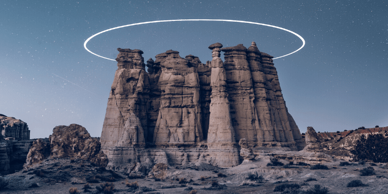
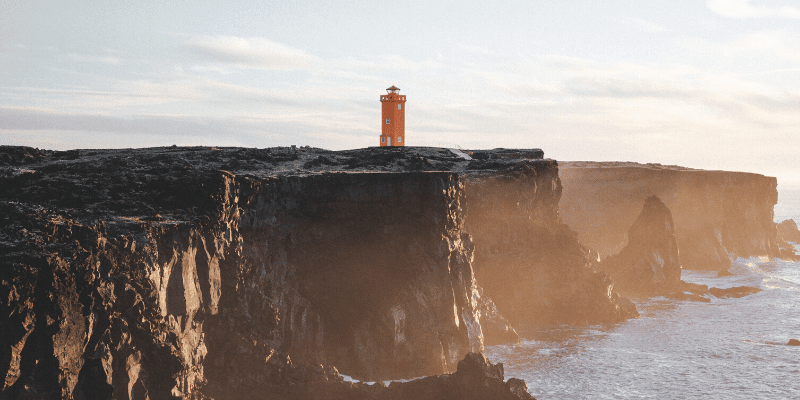

La Playa Pura
La Playa Pura is one of the most beautiful beaches in all of Mexico. With beautiful white sand,
surfboard lessons, hangliding, and fresh fruit stands every 300 meters; this is a family favorite! The name Playa
Pura means "Pure Beach", and it is called that because the pure white sand and the clear water makes this beach
truly feel all natural and pure.
Las Rocas Santas

Las Rocas Santas are an ancient and sacred place that have recently turned into one of the most beautiful
educational tours we have to offer. The ancient people of "Los Antiguos" have carved out temple caves all through this
magnificent rocky structure. Here you can find guided tours that go through the caves and share the history and culture of
these people. There are also some of the most beautiful and fun off-roading trails surrounding these caves!
La Luz de Margarita

La Luz de Margarita is a famous lighthouse with a legend of love and faith. Every
day Margarita Santabaca would go up to the lighthouse and shine the light in hopes of guiding her husband, Carlos de Santabaca, home from war.
She did that every single day for 5 years, keeping faith that he was alive even though he never responded to her letters. One day, 5 years
later, he finally came home. Come see the magnificent views and hear the wonderful story of La Luz de Margarita.